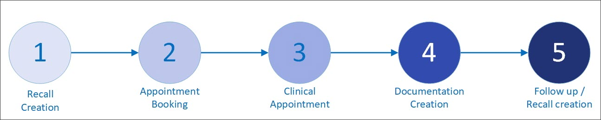

Occupational Health in Meddbase consists of a series of workflows, features and configuration, all of which should be addressed separately.
This article outlines the stages of Health Surveillance and subsequent articles in this section will walk you through each stage in detail.
The functionality outlined in this article requires initial setup and configuration to be completed. Click here for more details.
The Health Surveillance workflow available in Meddbase can be described as an encounter or a series of encounters with an employee, initiated by a recall.
The diagram below illustrates the process.

The process can be summarised as shown in the table below.
| Process Step | Explanation |
Recall Creation | The system is made aware of the need for a recall, either by manual creation or bulk upload. |
Appointment Booking | The recall prompts the need for an appointment to be booked. This can either be completed by a Meddbase user or a Manager on the Referral Portal. |
Clinical Appointment | The appointment goes ahead, and all relevant clinical notes are taken within Meddbase. |
| Documentation Creation | At the end of the appointment, some form of documentation (usually a Fitness Certificate or similar) is created, and shared with the employee and employer. |
Follow up/Recall creation | If the employee should continue to be on the Health Surveillance program, a follow up recall can be created to ensure the employee is seen again for their next recall. |